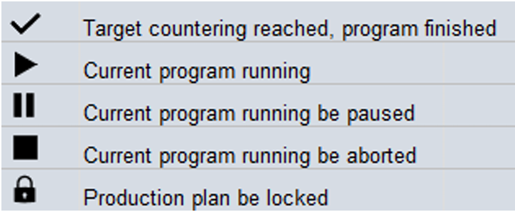
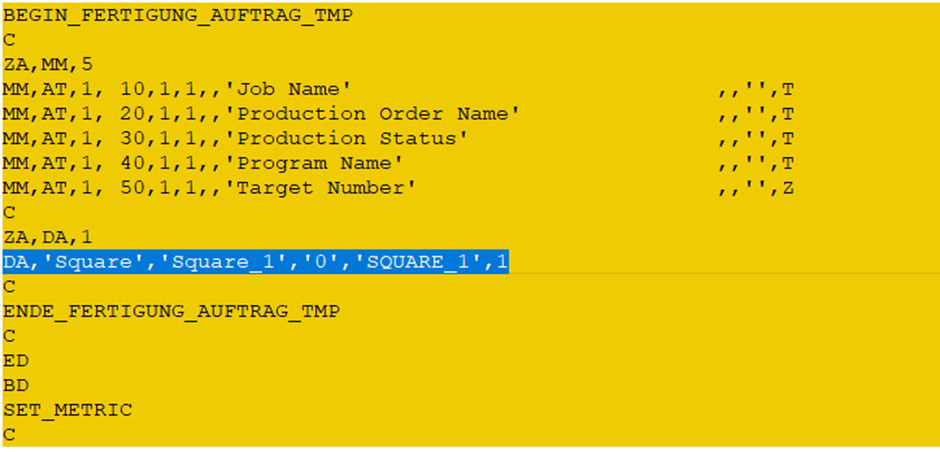
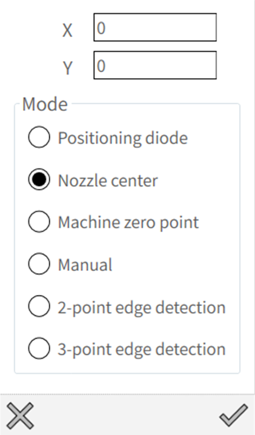

Produktionsplan ausführen
In der Produktionsplanliste können zahlreiche Programme angezeigt werden. Um eine klare Übersicht über den aktuellen Programmausführungsstatus zu erhalten, werden Symbole hinzugefügt, die den jeweiligen Status anzeigen.


Programmauswahl und Mengenänderung
Um einen Produktionsplan auszuwählen, klicken Sie auf den Namen des Produktionsplans. Das gesamte Produktionspaket wird in dunkler Farbe hervorgehoben.

Menge ändern: Die Menge kann nur angepasst werden, wenn sich der Produktionsplan im gesperrten Zustand befindet. Dies dient zur Vermeidung unerwarteter Belade-/Entladereaktionen der Maschine.
Bei der Anpassung der Istmenge ist der Maximalwert "Sollmenge - 1", um sicherzustellen, dass die vorgeladene Tafel ordnungsgemäß fertiggestellt wird.

Die Menge wird für jeden Produktionsplan gespeichert: Es kann vorkommen, dass der Produktionsplan läuft, aber ein neuer Produktionsplan mit höherer Priorität bearbeitet werden muss. In diesem Fall bricht der Bediener den aktuellen Produktionsplan ab und bearbeitet den neuen Produktionsplan. Am Ende wird der ursprüngliche Produktionsplan fortgesetzt. Daher müssen alle aktuellen Mengenstatus für jeden Produktionsplan gespeichert werden. Die Daten werden im IPC gespeichert und werden auch bei einem Maschinenneustart nicht gelöscht.
Nach aktueller Tafel stoppen
Schaltfläche "Stopp auf Tafel": Diese Funktion dient zum Stoppen des Produktionsplans, wenn die aktuelle Tafelbearbeitung abgeschlossen ist. In bestimmten Fällen möchte der Bediener den Produktionsplan stoppen und die weitere Bearbeitung der nächsten Tafel nicht fortsetzen. Er kann diese Funktion als Voreinstellung verwenden.
Aktivieren Sie diese Schaltfläche während der Bearbeitung. Wenn die aktuelle Tafel fertiggestellt ist, wird der Produktionsplan gestoppt und die nächste Tafel wird nicht weiter bearbeitet.

Im Produktionsplan erfolgt die Materialbestätigung bei jedem Start des Einzelprogramms.

Dauerbetriebsmodus
-
Der Dauerbetriebsmodus dient zur Überprüfung folgender Punkte:
-
Zuverlässigkeit der mechanischen Installation der Maschine.
-
Gasdruckregler.
-
Höhensteuerungsfunktion.
-
Bei aktivierter Emission die Markierungsoption aktivieren.
-
Fokussteuerungsbewegung.
-
Fokusdurchmesseränderung usw.
-
-
Der Dauerbetriebsmodus kann nur im Produktionsplan verwendet werden und läuft auf derselben Palette. (Der Palettenwechsler wird deaktiviert.)
-
Daher wird nur das pkg.lst-Dateiprogramm unterstützt. Wenn ein bestimmtes LST-Programm im Dauerbetriebsmodus getestet werden soll, konvertieren Sie es wie folgt in .pkg.lst:
-
Nachfolgend finden Sie den Vergleich zur Konvertierung der normalen LST (linke Seite) für die Ausführung im Produktionsplan (rechte Seite). Definieren Sie die Sollmenge mindestens als 1.

Der hervorgehobene Wert '1' ist die Sollmenge. -
Aktualisieren Sie außerdem den Auftragsnamen, den Produktionsauftragsnamen und den Programmnamen wie folgt:

Dabei gilt:
'Square' ist der Auftragsname
'Square_1' ist der Produktionsauftragsname
'SQUARE_1' ist der Programmname -
Nachfolgend finden Sie den zusätzlichen Code, der für die Konvertierung in den PP-Modus erforderlich ist:
-
-
Wählen Sie das gewünschte Auftragsprogramm im Produktionsplan aus und geben Sie die Anzahl der Zyklen ein, die das Programm ausführen soll.

-
Aktivieren Sie die Schaltfläche Dauerbetriebsmodus. Der Hinweis erscheint auf der linken Seite. Im aktiven Zustand wird der Modus beim Wechsel in den Normalmodus deaktiviert und beim Zurückkehren in den PP-Modus automatisch wieder aktiviert, bis er über die Schaltfläche im PP-Modus deaktiviert wird. +

-
Erfassen Sie den Arbeitsoffset beim ersten Mal. Wenn die Kantenerkennung ausgewählt wurde, wird diese bei jedem Programmstart ebenfalls ausgeführt.

-
Beim Programmstart erscheint ein Popup-Fenster. Geben Sie hier die Zyklusintervallzeit ein.

-
Das Programm läuft nun kontinuierlich, bis die vorgegebene Sollmenge erreicht ist.